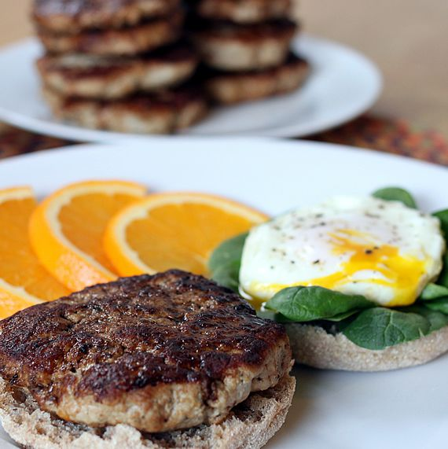

Combine milk with vinegar in a medium bowl and set aside for 5 minutes to "sour".
Combine milk with vinegar in a medium bowl and set aside for 5 minutes to "sour".
Heat a large skillet over medium heat, and coat with cooking spray. Pour 1/4 cupfuls of batter onto the skillet, and cook until bubbles appear on the surface. Flip with a spatula, and cook until browned on the other side.
Recipe #2: Maple Apple Turkey Sausage

Cook Time
6 minutes
Ingredients
1 pound of lean ground turkey
1 small apple
1 tablespoon of pure maple syrup
3/4 teaspoon of salt
1/4 teaspoon of garlic powder
1/4 teaspoon of ground black pepper
1/4 teaspoon of dried marjoram
1/8 teaspoon of ground cinnamon
1 dash of ground cloves
1 tablespoon of olive oil
Directions
Combine turkey, apple, maple syrup, salt, sage, garlic powder, black pepper, marjoram, cinnamon, and cloves in a bowl; mix well. Form into 10 small patties.
Heat olive oil in a skillet over medium heat. Fry patties until no longer pink in the center and the juices run clear, 3 to 4 minutes per side. An instant-read thermometer inserted into the center should read at least 165 degrees F (74 degrees C).
Recipe #3: Waffles
Cook Time
15 minutes
Ingredients
2 eggs
1 small apple
2 cups of all-purpose flour
1 3/4 cups of milk
1/2 cup of vegetable oil
1 tablespoon of white sugar
4 teaspoons of baking powder
1/4 teaspoon of salt
1/2 teaspoon of vanilla extract
Directions
Preheat waffle iron. Beat eggs in large bowl with hand beater until fluffy. Beat in flour, milk, vegetable oil, sugar, baking powder, salt and vanilla, just until smooth.
Spray preheated waffle iron with non-stick cooking spray. Pour mix onto hot waffle iron. Cook until golden brown. Serve hot.